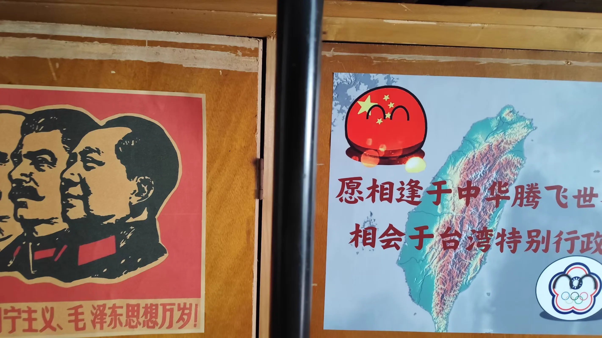
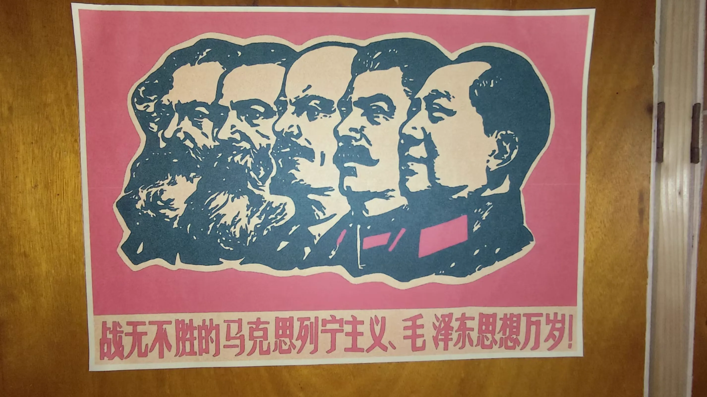
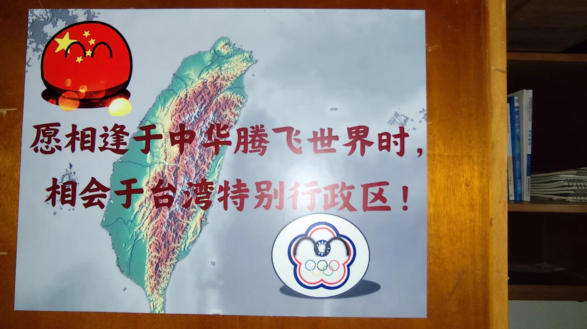
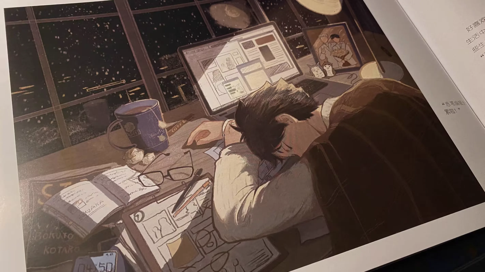

Journal · 2024-11-19
湖北省武汉市
编辑于2024年11月19日 15:23
有生之年，华科校内，我制作了人生中第一个“波兰球”宣传画。至今犹记，黄州府的一位教研员曾有感而发：“我这一生，有个伟大的愿望，我希望我们的国家能够统一，我们的民族能够更加团结！”




Edited on Nov 19, 2024 15:23
In my lifetime, on the HUST campus, I made the first “Polandball” propaganda poster of my life. To this day I still remember a teaching researcher from Huangzhou Prefecture who once spoke with feeling: “All my life I have had one great wish—that our country may be unified and our nation may be even more united!”
Modifié le 19 nov. 2024 à 15:23
De mon vivant, sur le campus de HUST, j'ai réalisé la première affiche de propagande « Polandball » de ma vie. Je me souviens encore qu'un chercheur en pédagogie de la préfecture de Huangzhou s'est un jour exclamé avec émotion : « Toute ma vie, j'ai eu un grand souhait : que notre pays soit unifié et que notre nation soit encore plus unie ! »
Bearbeitet am 19.11.2024 um 15:23
Zu Lebzeiten habe ich auf dem Campus der HUST das erste „Polandball“-Propagandaplakat meines Lebens erstellt. Bis heute erinnere ich mich daran, dass ein Unterrichtsforscher aus der Präfektur Huangzhou einmal ergriffen sagte: „Mein ganzes Leben lang habe ich einen großen Wunsch – dass unser Land geeint sein möge und unsere Nation noch geeinter werde!“